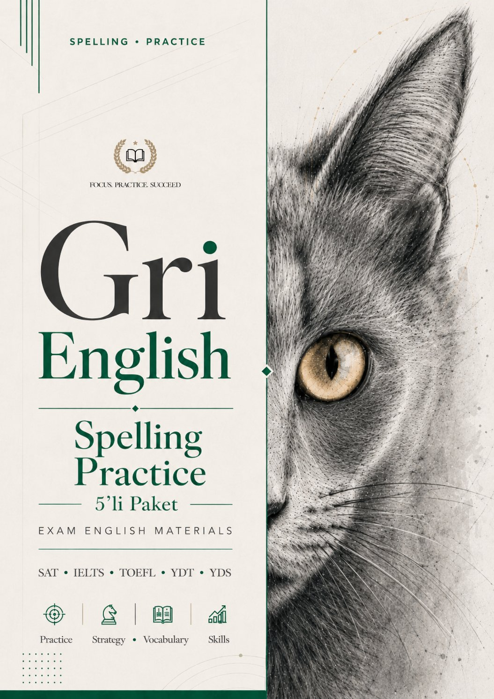
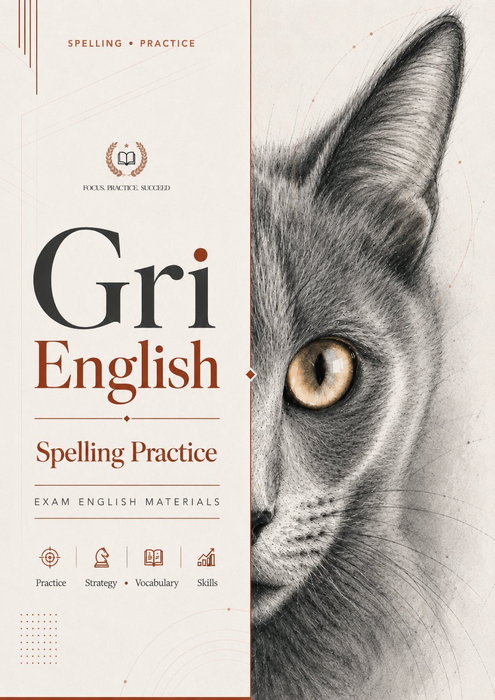
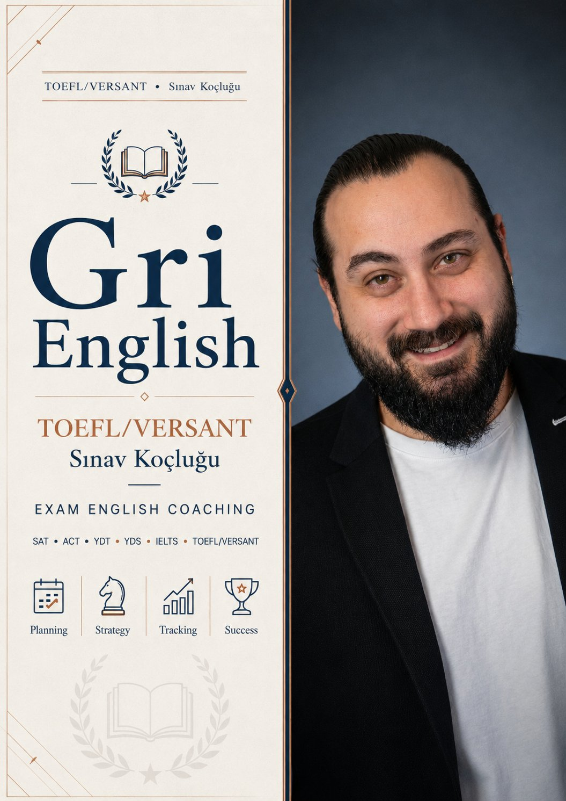

İngilizce yeterlilik sınavlarına sınav formatına uygun, beceri odaklı ve sistemli şekilde hazırlanmak için tasarlanmış materyaller. TOEFL iBT akademik okuma, dinleme, konuşma ve yazma becerilerine odaklanırken, Versant hızlı anlama, akıcı konuşma, telaffuz ve otomatik dil üretimini geliştirmeyi hedefler.
Akademik İngilizce yeterliliğini ölçen uluslararası bir sınav. Üniversite başvuruları, hazırlık muafiyetleri ve yurt dışı eğitim süreçlerinde kullanılır.
Reading, Listening, Speaking ve Writing bölümleri birbirinden bağımsız değil; özellikle Speaking ve Writing'de öğrenciden okuduğu ve dinlediği bilgileri kullanarak cevap üretmesi beklenir.
Öğrencinin İngilizceyi hızlı, doğal ve işlevsel şekilde kullanıp kullanamadığını ölçen bir yeterlilik sınavı. Daha pratik ve otomatik dil üretimine dayanır.
Dinleme, konuşma, telaffuz, akıcılık, cümle kurma ve hızlı cevap verme ön plana çıkar. Öğrenciden uzun akademik analizler değil, doğal hızda doğru dil yapıları beklenir.
Writing görevleri ve akademik kelime bilgisi için interaktif pratik paketleri.

Integrated Writing, Academic Discussion ve email görevleri. Model cevap karşılaştırmalı, AI destekli geri bildirim.

6 set, 300 akademik kelime. Türkçe karşılık, hatırlatıcı ipucu, bağlamda örnek ve interaktif yazım pratiği.
Hedef puan, sınav tarihi ve mevcut seviyene göre hazırlanan kişisel çalışma planı. Haftalık görevler, ödev kontrolü ve düzenli geri bildirim.

Hedef puana yönelik kişisel çalışma planı. Haftalık takip, ödev kontrolü, aylık tam analiz.
Sınav koçluğu için iletişime geçiniz
İletişimTOEFL iBT ve Versant, ikisi de İngilizce yeterliliğini ölçmesine rağmen öğrenciden beklenen beceriler farklı şekillerde ortaya çıkar. TOEFL iBT daha akademik bir sınavdır ve öğrencinin okuma, dinleme, konuşma ve yazma becerilerini üniversite ortamına benzer görevler üzerinden değerlendirir. Versant ise günlük ve işlevsel dil kullanımına, hızlı anlama, doğru tepki verme, akıcılık, telaffuz ve otomatik dil üretimine odaklanır. Bu nedenle hazırlık, her sınavın formatını, soru tiplerini, zaman baskısını ve değerlendirme mantığını tanımakla başlar.
TOEFL iBT Reading bölümü, akademik metinleri anlayabilme ve analiz edebilme becerisini ölçer. Ana fikir, detay, çıkarım, kelime anlamı, referans ve metin organizasyonu gibi alanlar ön plandadır. Uzun ve yoğun akademik metinleri her kelimeyi çevirmeye çalışmadan, metnin yapısını, ana argümanını ve önemli detaylarını takip ederek okumak gerekir. Amaç hem doğru cevap oranını artırmak hem de metni daha verimli okumaktır.
TOEFL iBT Listening, akademik dersleri ve kampüs konuşmalarını anlama becerisini ölçer. Konuşmacının amacı, ana fikir, detaylar, tutum ve bilgi akışını takip etmek gerekir. Her şeyi yazmak yerine önemli fikirleri, örnekleri, neden-sonuç ilişkilerini ve konuşmacının vurguladığı noktaları yakalayan stratejik not alma çalışmaları öne çıkar. Dinleme sırasında pasif kalmamak ve bilgiyi sınav sorularına uygun şekilde işlemek esastır.
Speaking bölümü, kısa sürede anlaşılır, organize ve yeterince geliştirilmiş cevaplar verebilmenizi ölçer. Akıcılık, telaffuz, kelime kullanımı, cevap yapısı ve içerik gelişimi birlikte değerlendirilir. Her soru tipine uygun cevap şablonları, giriş cümlesi kurma, ana fikri net verme, örneklerle destekleme ve zamanı etkili kullanma çalışılır. Amaç ezberlenmiş cevaplar değil, doğal ve kontrollü konuşma becerisi geliştirmektir.
Writing bölümü, akademik yazma becerisini ve bilgiyi organize etme gücünü ölçer. Integrated Writing'de bir metin okuyup bir konuşma dinler, ardından iki kaynak arasındaki ilişkiyi yazılı açıklarsınız. Academic Discussion'da belirli bir akademik konu hakkında görüş bildirir ve bunu gerekçelendirirsiniz. Kaynak bilgiyi doğru aktarma, ana fikirleri seçme, karşıtlık ve destek ilişkilerini gösterme, akademik cümleler kurma ve fikirleri yeterince geliştirme bu bölümün ana becerileridir.
Versant'ta dinleme becerisi, hızlı tepki vermeyle doğrudan bağlantılıdır. Duyduğunuz yönergeyi, cümleyi veya kısa bilgiyi hızlı anlamak ve buna uygun cevap vermek gerekir. Sesleri, kelime gruplarını, vurgu kalıplarını ve anlam birimlerini dikkatli takip etmek; kelimeleri duymak değil, bilgiyi hızlı ve doğru işlemek bu sınavın özüdür.
Versant'ta konuşma becerisi yalnızca doğru cevap vermekle sınırlı değildir. Akıcı, anlaşılır, doğal tempoda ve doğru telaffuzla konuşmak gerekir. Cümleleri daha doğru üretmek, duraksamaları azaltmak, kelime vurgusuna dikkat etmek ve daha anlaşılır bir konuşma ritmi geliştirmek, sınav sırasında daha rahat, daha hızlı ve daha kontrollü cevap vermenizi destekler.
TOEFL iBT veya Versant sınavına hazırlanan öğrenciler için uygundur. Üniversite başvurusu, hazırlık atlama, okul içi yeterlilik sınavı, yurt dışı eğitim süreci veya kurumların istediği İngilizce yeterlilik şartları için çalışanlar buradan faydalanabilir. TOEFL iBT'de akademik metinleri anlamakta zorlanan, dinleme sırasında not almakta güçlük çeken, Speaking'de cevaplarını organize edemeyen veya Writing'de fikirlerini geliştiremeyen; Versant'ta konuşurken yavaş kalan, telaffuzda zorlanan veya hızlı anlamakta güçlük çeken öğrenciler için uygundur.
Mevcut seviyeniz, hedefiniz ve sınav tarihine göre öneri için iletişime geçin.
İletişime Geç